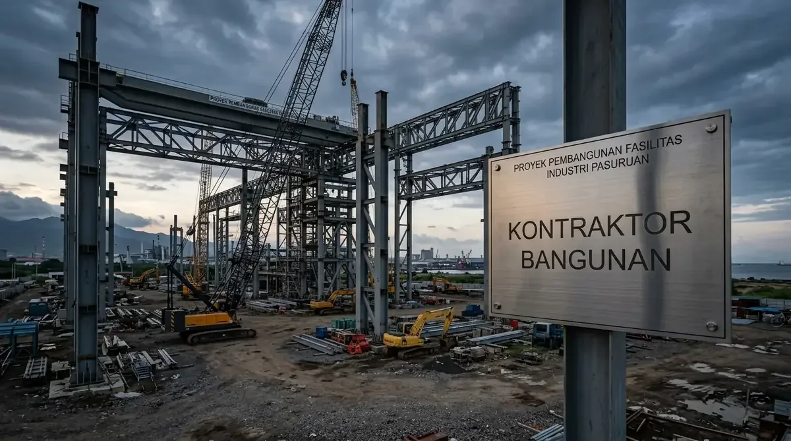

Komponen Utama Pembentuk Biaya Bangun Gedung di Malang
Komponen biaya terbagi ke dalam 5 pos utama: pekerjaan persiapan & geoteknik, pekerjaan struktur sipil, pekerjaan arsitektur, pekerjaan instalasi MEP, dan perizinan legalitas.
Berdasarkan benchmark proyek konstruksi komersial Jawa Timur 2025/2026, berikut distribusi alokasi anggaran proyek gedung:
- Pekerjaan Persiapan & Geoteknik (5-8%): Uji tanah sondir-boring, perataan lahan (cut and fill), pemagaran proyek, direksi keet, dan K3.
- Pekerjaan Struktur Bawah & Atas (35-45%): Pondasi bored pile, pile cap, balok tie beam, kolom beton mutu K-350, plat lantai bondek, dan atap dak beton/baja WF.
- Pekerjaan Arsitektur & Finishing (25-30%): Dinding hebel, plester aci, fasad curtain wall kaca, panel ACP, plafon akustik, partisi, dan lantai granit/epoxy.
- Pekerjaan MEP (15-22%): Kabel daya trafo, genset backup, penerangan, tata udara AC, lift penumpang, hidran sprinkler damkar, dan IPAL.
- Perizinan & Pengawasan (3-5%): Gambar DED, pengurusan PBG, AMDAL/UKL-UPL, konsultan pengawas, dan sertifikasi SLF.
Simulasi Estimasi Biaya Bangun Gedung 4 Lantai di Malang
Simulasi biaya pembangunan gedung perkantoran atau kampus 4 lantai dengan luas total lantai 1.200 m² di kawasan Kota Malang.
Berikut estimasi rincian biaya berdasarkan harga satuan pekerjaan 2026:
1. Pekerjaan Tanah & Pondasi Dalam (Bored Pile dia 40 cm kedalaman 18 m)
Biaya: Rp540.000.000 – Rp720.000.000
2. Struktur Beton Bertulang Lantai 1 s/d 4 (Mutu K-350 & Besi Ulir SNI)
Biaya: Rp1.800.000.000 – Rp2.280.000.000
3. Pekerjaan Pasangan Dinding, Fasad ACP & Kaca Curtain Wall
Biaya: Rp1.320.000.000 – Rp1.680.000.000
4. Finishing Lantai Granit Tile 80x80, Plafon & Pengecatan
Biaya: Rp780.000.000 – Rp960.000.000
5. Instalasi MEP, Genset & Lift (1 Unit 8 Orang)
Biaya: Rp1.140.000.000 – Rp1.560.000.000
Estimasi Total Biaya Konstruksi: Rp5.580.000.000 – Rp7.200.000.000 (Rata-rata: Rp4.650.000 – Rp6.000.000 per meter persegi luas bangunan).

Proses pengeboran pondasi bored pile mesin hidrolik pada proyek konstruksi gedung di Malang.
Tabel Komparasi Biaya Pembangunan Berdasarkan Fungsi Gedung di Malang
Tabel komparasi menyajikan rentang biaya per meter persegi, spesifikasi utama, dan waktu pengerjaan untuk berbagai peruntukan gedung di Malang Raya.
| Peruntukan Gedung | Estimasi Biaya / m² | Spesifikasi Utama | Durasi Pengerjaan |
|---|---|---|---|
| Gedung Kampus / Sekolah | Rp3.800.000 – Rp4.900.000 | Lantai granit heavy duty, ventilasi alami lebar, akustik kelas | 6 – 9 Bulan |
| Gedung Kantor Modern | Rp4.500.000 – Rp6.000.000 | Fasad ACP & kaca curtain wall, partisi modular, lift, AC ducting | 7 – 10 Bulan |
| Gedung Rumah Sakit / Klinik | Rp5.500.000 – Rp7.800.000 | Lantai vinyl anti-bakteri, dinding timbal radiologi, tata udara HEPA | 9 – 14 Bulan |
| Hotel Melati / Budget Hotel | Rp4.200.000 – Rp5.600.000 | Kamar mandi modular, pintu access card, sistem air panas sentral | 8 – 11 Bulan |
- Gunakan Pondasi Bored Pile Hidrolik: Di area perkotaan Malang yang padat penduduk, gunakan sistem bor putar (rotary drilling) untuk menghindari komplain retak pada dinding tetangga akibat getaran tiang pancang pukul.
- Kunci Kontrak Borongan Turnkey Bergaransi: Gunakan skema kontrak Fixed Price Lump-Sum berbasis gambar DED final agar kontraktor tidak bisa mengajukan klaim kenaikan harga material di kemudian hari.
- Lakukan Value Engineering (VE): Diskusikan alternatif substitusi material yang memiliki mutu setara namun lebih ekonomis (misal: panel dinding pracetak ringan pengganti bata merah).
Pertanyaan yang Sering Diajukan (FAQ)
Kesimpulan Praktis
Transparansi Rencana Anggaran Biaya (RAB) dan ketepatan perhitungan rekayasa struktur adalah fondasi utama kesuksesan proyek pembangunan gedung bertingkat di Malang. Dapatkan penawaran terbaik dari kami.